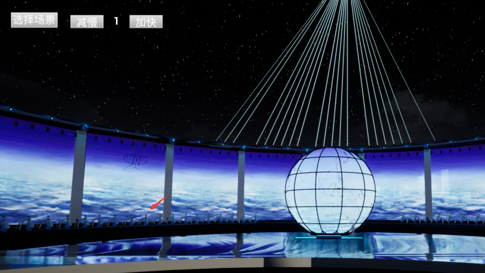
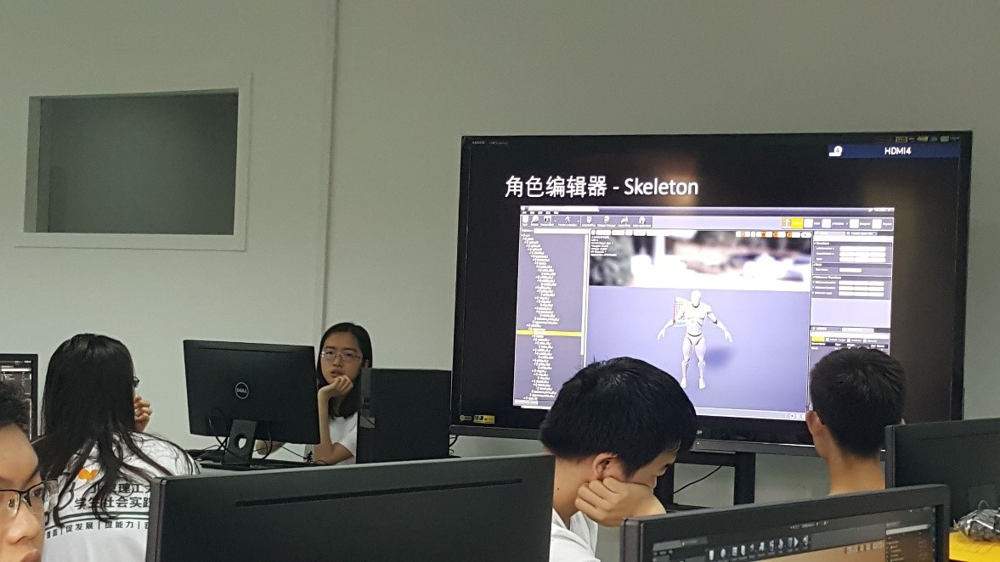
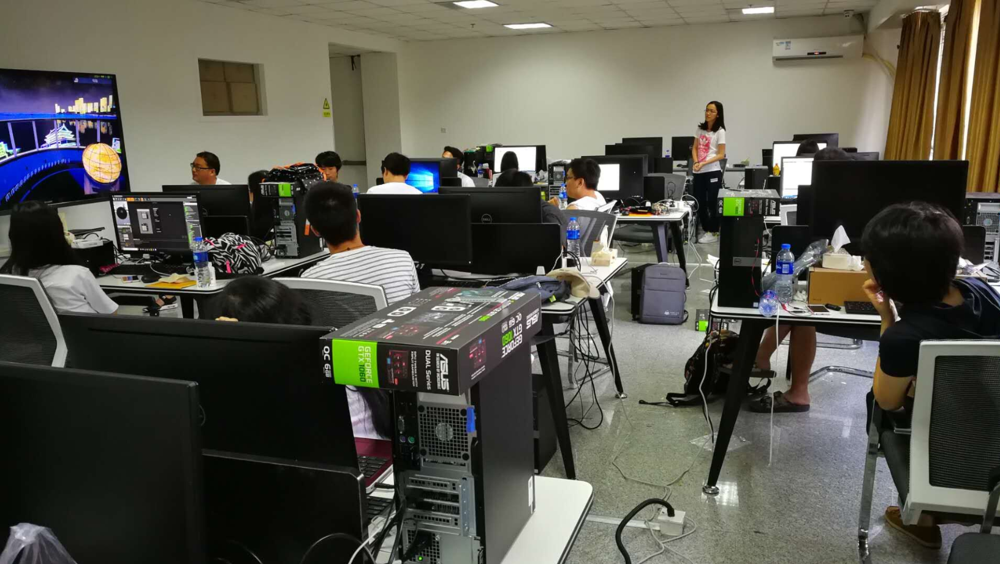
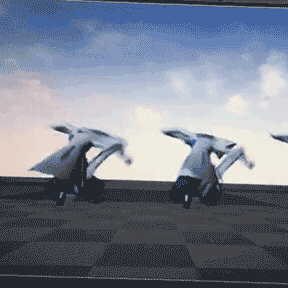
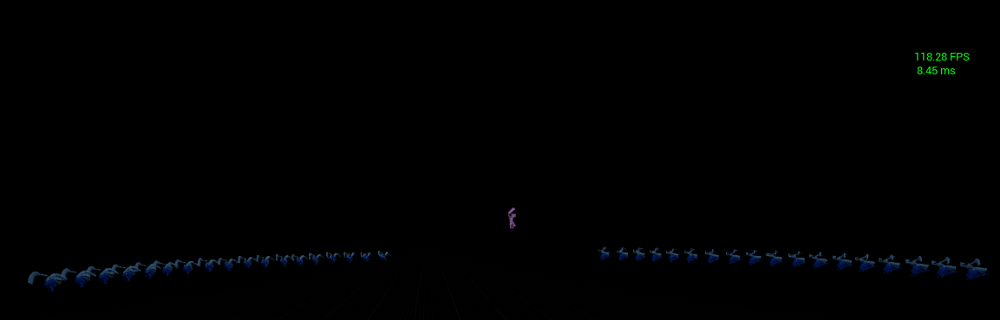
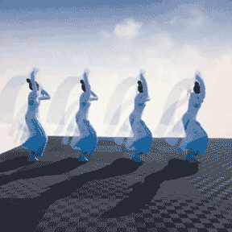
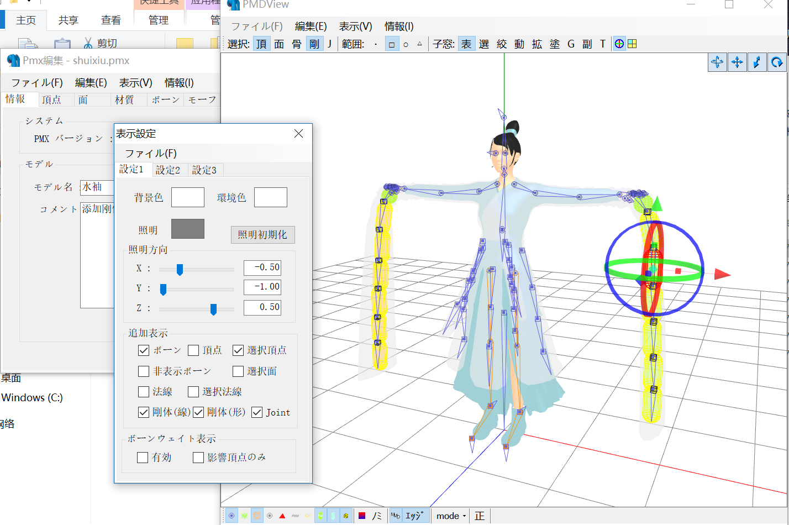

Unreal Engine Project: Dancers Simulation
In this page, I will introduce my first unreal project to you: the Simulation of the Shanghai Cooperation Light Show. I shouldered the simulation of the dancers. The dancers wore a Chinese traditional dance cloth, the “water sleeves”, to create a better visual effect for the audiences. Here is the final effect of the simulation project. The red arrow points the dancers, which is not quite obvious in the whole scene according to the real scale of human and the stage, but truly contribute to the facticity of the simulation. 
I finished the project in a summer training program in 2018. I was invited by a Virtual Simulation Lab professor and worked with postgraduate and doctoral students as an undergraduate. I gained this opportunity because my outstanding perform in the Digital Art Lab, which I lead a game developing program.
Check out our group photo
I learnt how to use the Unreal Engine, especially the animation part, in the first week of the summer training, and made a slider to teach others of the animation part.
Check out my slides hereI taught others about the Unreal Engine animation with the slides. 
Introduced and explained my work at the end of the training program. 
Now I will introduce my work to you too. Although the Unreal Engine has an “inside” real-time cloth simulation system, I choose another way. Because the project need playing animation sequences and videos, running the complicated blueprint and animating particles at the same time, so I should cut down the cost as much as I could.
The real-time cloth simulation in Unreal:
I replaced the real-time cloth simulation with pre-calculated animation with the permission of the professor, which accelerated the running frame rate. It could achieve nearly 120fps with my animation part in an empty map.
The visual effect:
To complete the workflow, I used following software and plugins:
I also learnt other software, which might be helpful, including Marvelous, 3dmax and other stuffs.
Though they didn’t contribute to my work this time, I treat them as precious accumulations.
The skills of 3dmax did help me a lot in a later work.
Time to introduce the workflow! I also composed a tutorial on the simulation of cloth movement for the Lab’s future reference.
What all I had of the project, from the Lab, are a model of the dancer (without bones) and a BVH mocap data.
First of all, change the BVH data to vmd (a specific data for MikuMikuDance) by LiveAnimation
Second, Binding and weighting in metaseq4
 Third, Adding rigid bodies and joints in the PmxEditor
Third, Adding rigid bodies and joints in the PmxEditor

You can also calculate the physic and check the rigid bodies in PmxEditor.
Next, import all plugin you need to Blender, and import your model. Calculate the physic and bake the animation of those rigid bodies. Finally, export as a fbx file and import it to your Unreal project.